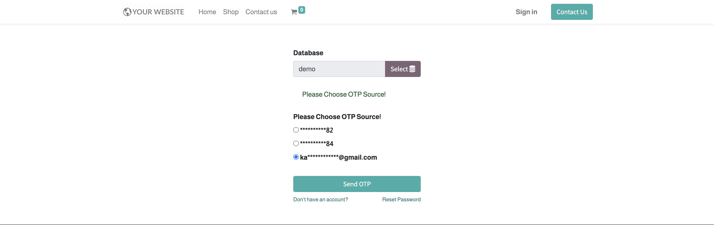
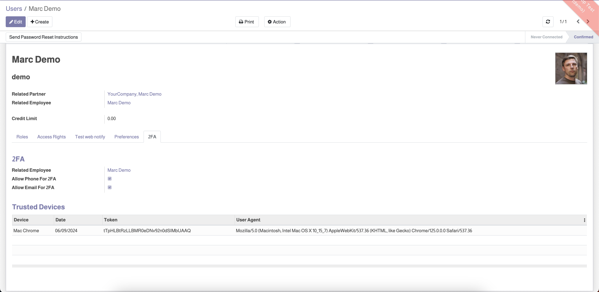
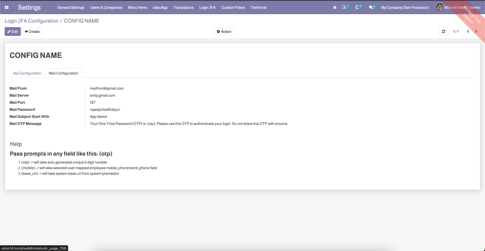

Pandora Login Via 2FA (Via Employee Mobile & Email)
This module allows users to log in via two-factor authentication using their registered mobile phone number or email address. Enhance security and streamline the login process with OTP-based authentication.
Features
- User authentication via OTP sent to mobile or email.
- Option to remember devices for future logins without OTP.
- Management of trusted devices.
- Configuration of SMS API and email server for OTP delivery.
Usage
- When a user enters their username and password, they will be prompted to choose either their registered email or mobile number to receive an OTP.
- After selecting the preferred method, an OTP will be sent to the chosen contact method.
- The user will then enter the OTP on the next screen to complete the login process.
- The 'Remember Me' option allows the user to save a token for future logins without requiring an OTP.
- Trusted devices and tokens can be managed under the User 2FA tab in the user settings.
Screenshots
Login Page - Enter Username and Password

Choose Email or Phone for OTP

Enter OTP and Remember Me Option

User 2FA Tab - Allow Phone and Email for 2FA

Trusted Devices Management

Login 2FA Settings - Configure SMS API

Login 2FA Settings - Configure Email Server

License
This module is licensed under the Odoo Proprietary License v1.0 (OPL-1). For more information, please visit the Odoo documentation on licenses.
Support
If you have any questions or need assistance, please contact us at support@pandoratech.ae.